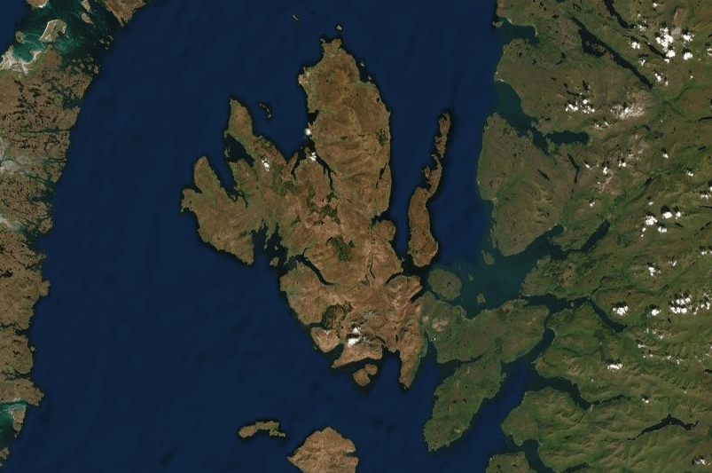
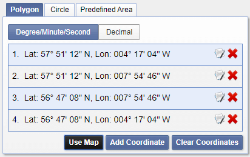
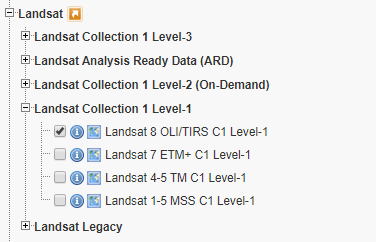
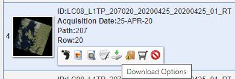
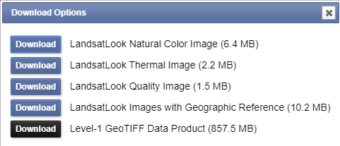
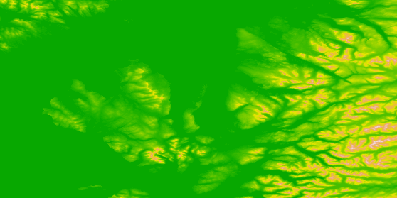
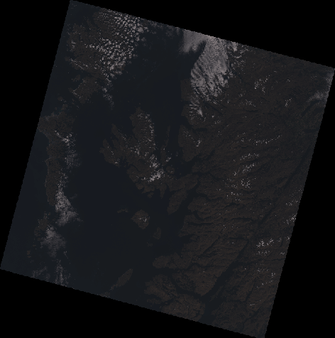
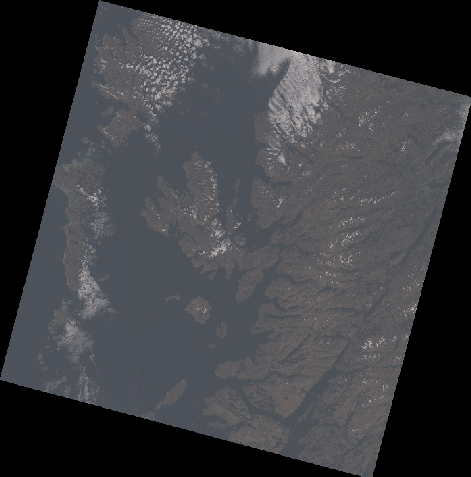
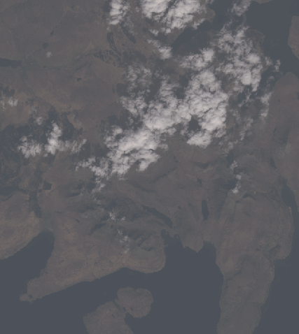

Ths is my first foray into geographic information systems (GIS) and 3D map visualization. I was inspired by a post and tutorial by Tyler Morgan-Wall, a physicist and data scientist from the US. I delved into R breifly back undergrad out of general interest, however you don’t need to have used R before to follow these or Tyler’s steps.
I’ve written up my experience, as it differs a little from the steps laid out in his blog post tutorial, as I didn’t have most of the R packages installed and I ran into a few issues. I went through Tyler’s tutorial twice, once on my macbook and again on Windows I was attempting to gain faster render times for the final product, so the following will work on Windows and Mac. If you’re even mildly interested in visualizing maps in 3D or R programming check out Tyler’s blog.
Installing R
Install R, R Studio an IDE for R and XQuartz in addition if you’re on Mac.
Visualizing The Cuillin

We’re going to visualize The Cuillin, a range of mountains which are part of the Isle of Skye, Scotland. The area has featured in movies, such as Prometheus due to its ailen-world visuals and general stunning beauty. I was hoping to produce imagery as visually appealing as Tyler Morgan-Wall’s render of Zion National Park, sadly, my render doesn’t appear as detailed and it’s quite dark. But, I managed to create a 3D render of the selected area, so I can’t complain. I’ll investigate making it look prettier another time.
Getting the Data
You will need to make an account to gather the data you need at USGS. If at any point you’re greeted with the requirement for a password when downloading data, you need to make an account with the data owner.
Elevation Data
Once you have your account, head over to 30-Meter SRTM Tile Downloader, a website which makes finding the data you want much easier. The USGS website lists the data in a never ending series of N00E072.htg.zip, buried in a series of folders with names you don’t understand. The tile downloader provides a map of earth overlaid with tiles of the respective 30-meter resolution elevation data.
Select and download the area of the data you want. If the area overlaps more than one square, that’s fine we can merge the data sets in R.
Satellite Imagery
On the USGS Earth Explorer navigate to the Isle of Skye, sticking out at the north western edge of Scotland, shielded by the Outer Hebrides.

Click ‘Use Map’ on the side pannel on the left, this will add a red bounding box around the edge of the area you are viewing.

On the Data Sets tab on the left pannel, select Landsat > Landsat Collection 1 Level-1 > Landsat 8 OLI/TIRS C1 Level-1, and click results at the bottom.

This will search the area you selected a few moments ago for availalbe imagery. Now you just have to find a picture. At the time I was using the application a suitable picture was number 4 on the list. Be careful not to choose an image full of cloud.

Download the TIF file of the image you want. This will be quite large (~850MB), but it includes seperate image RGB channels which we’ll be using later.

The Code
The following code is simply the code from Tyler Morgan-Wall’s blog post (under MIT license) on the subject. I considered cutting it down, but that would rob the reader of the step-by-step nature of Tyler’s metholody, and its helpful to see each step in turn. I added additional libraries which are required, and I changed the name of the variables to correspond to the different location (Isle of Skye).
If you want to create imagery as visually appealing as his, you can copy & paste the libraries below, and then follow his steps from the top. That was the consistent issue I faced as code ran, along with the multi-program initial set up.
Install packages
Open R Studio and create a new R script (File > New File > R Script). Add the following libraries which will be installed at runtime.
library(rayshader)
library(sp)
library(raster)
library(scales)
library(magrittr)
library(rgdal)
library(magick)
Add the datasets, and merge
Let’s load the elevation data, merge the two datasets into skye_elevation, plot height using the data and render the map. Move the downloaded hgt files into a folder somewhere and replace the file paths below with your own. If you don’t need to merge datasets simply remove the second line and replace assignment of skye_elevation to elevation1 (skye_elevation = elevation1), this just means you don’t need to replace that variable multiple places in the code, its not good code.
elevation1 = raster::raster("C:/Users/USER/Documents/Dev/N57W006.hgt")
elevation2 = raster::raster("C:/Users/USER/Documents/Dev/N57W007.hgt")
skye_elevation = raster::merge(elevation1,elevation2)
height_shade(raster_to_matrix(skye_elevation)) %>%
plot_map()
Open the plots tab in R Studio (bottom right). Our first output. Nice! It shows a heat-map of the elevation of the area.

Now we’ll load the RGB (Red, Green, Blue) channels from the TIF zipped folder we downloaded earlier, these will be combined to make our satellite image. The folder will need unzipping and a folder created from that will need unzipping on Windows, Mac is one upzip. The TIF files ending B4, B3, B2 are the reg, green and blue channels respectively. You can delete the other files to save some space.
skye_r = raster::raster("C:/Users/USER/Documents/Dev/B4.TIF")
skye_g = raster::raster("C:/Users/USER/Documents/Dev/B3.TIF")
skye_b = raster::raster("C:/Users/USER/Documents/Dev/B2.TIF")
skye_rbg = raster::stack(skye_r, skye_g, skye_b)
raster::plotRGB(skye_rbg, scale=255^2)

As Tyler points out, this is a little dark. We need to apply gamma:
skye_rbg_corrected = sqrt(raster::stack(skye_r, skye_g, skye_b))
raster::plotRGB(skye_rbg_corrected)

That’s better, if a little washed-out. We’ll add contrast later to fix that.
raster::crs(skye_r)
raster::crs(skye_elevation)
crs(skye_r)
The above reveals a problem, the coordinate systems for elevation and the image data aren’t of the same type. We fix this by transforming the elevation data to UTM coordinates using raster::projectRaster() and store it in skye_elevation_utm.
skye_elevation_utm = raster::projectRaster(skye_elevation, crs = crs(skye_r), method = "bilinear")
crs(skye_elevation_utm)
Now we’ll crop the data to a desired area, we’re going to focus on the Cuillin mountain range in the south of Skye. Head back to the USGS Earth Explorer, where you obtained the satellite imagary and find the appropraite bottom left and top right longditude and latitude coordinates to crop to. You may encounter errors which indicate you’re cropping an area not within the bounds of the data, or which indicate you’ve entered the long/lat incorrectly - somehow when typing I managed to reverse x/y.
bottom_left = c(y=-6.3460, x=57.1407)
top_right = c(y=-6.0081, x=57.3299)
extent_latlong = sp::SpatialPoints(rbind(bottom_left, top_right), proj4string=sp::CRS("+proj=longlat +ellps=WGS84 +datum=WGS84"))
extent_utm = sp::spTransform(extent_latlong, raster::crs(skye_elevation_utm))
e = raster::extent(extent_utm)
e
Below we crop the datasets, create an array containing the RGB values and convert the elevation data to an R matrix, which is what the rayshader function expects.
skye_rgb_cropped = raster::crop(skye_rbg_corrected, e)
elevation_cropped = raster::crop(skye_elevation_utm, e)
names(skye_rgb_cropped) = c("r","g","b")
skye_r_cropped = rayshader::raster_to_matrix(skye_rgb_cropped$r)
skye_g_cropped = rayshader::raster_to_matrix(skye_rgb_cropped$g)
skye_b_cropped = rayshader::raster_to_matrix(skye_rgb_cropped$b)
zionel_matrix = rayshader::raster_to_matrix(elevation_cropped)
skye_rgb_array = array(0,dim=c(nrow(skye_r_cropped),ncol(skye_r_cropped),3))
skye_rgb_array[,,1] = skye_r_cropped/255 #Red layer
skye_rgb_array[,,2] = skye_g_cropped/255 #Blue layer
skye_rgb_array[,,3] = skye_b_cropped/255 #Green layer
skye_rgb_array = aperm(skye_rgb_array, c(2,1,3))
plot_map(skye_rgb_array)

We increase the contrast using the scales::rescale() function and generate our image.
skye_rgb_contrast = scales::rescale(skye_rgb_array,to=c(0,1))
plot_map(skye_rgb_contrast)
Looking pretty good. Not as vibrant and appealing as Tyle’s, but it’s a first try.
Now for the bit you’re doing this for, the 3D render of the location:
plot_3d(skye_rgb_contrast, zionel_matrix, windowsize = c(1100,900), zscale = 15, shadowdepth = -50,
zoom=0.5, phi=45,theta=-45,fov=70, background = "#F2E1D0", shadowcolor = "#523E2B")
render_snapshot(title_text = "The Cuillin, Isle of Skye, Scotland | Imagery: Landsat 8 | DEM: 30m SRTM",
title_bar_color = "#1f5214", title_color = "white", title_bar_alpha = 1)
This can be finiky on Windows, you might not be albe to access the x icon to close the window which is created, but resizing the window by draging pops the window top down into view. I’m likely missing a function or parameter I’m unaware of, or its a bug.
The Final Result
Woohoo! 3D maps.
Tyler goes a step further to create a rotating video. It took around 20 minutes for me to render, despite a i7-5820K - although R is single threaded by default. I went down a rabbithole learning about paralell processing in R, so I’m looking to reduce that time as once I’ve figured out how to make the images look better, like Tyler’s examples, as I’d like to render some interesting locations and add the images to Wikipedia.
Hope you enjoyed the write up. See you again next time.